用途与工作原理
海水淡化设备包括机架式及集装箱内装配的设备图片。需结合原海水水质、产水用途和运行条件确定预处理、膜系统及后处理配置。

主要技术参数
| 评估项目 | 参数或确认事项 |
|---|---|
| 产水量（m³/d） | 〔待确认：海水淡化 产水量（m³/d）〕 |
| 原水盐度（mg/L） | 〔待确认：海水淡化 原水盐度（mg/L）〕 |
| 产水水质 | 〔待确认：海水淡化 产水水质〕 |
| 回收率（%） | 〔待确认：海水淡化 回收率（%）〕 |
| 能耗（kWh/m³） | 〔待确认：海水淡化 能耗（kWh/m³）〕 |
| 预处理与膜配置 | 〔待确认：海水淡化 预处理与膜配置〕 |
适用场景
业务涉及海岛、沿海及船舶等用水场景。具体设备适用环境、安装条件和产水要求需逐项核实。
选型建议
提供原水检测、水温变化、产水用途和浓水处置条件。
配置与交付边界
已有设备装配照片。〔待确认：型号、产水量、原水条件、回收率、能耗及具体配置〕
相关案例
〔待确认：该类产品在现有项目中的实际供货范围及可公开案例〕
查看已有项目资料产品图库
点击图片可查看大图。具体型号、配置和性能以确认后的产品资料为准。
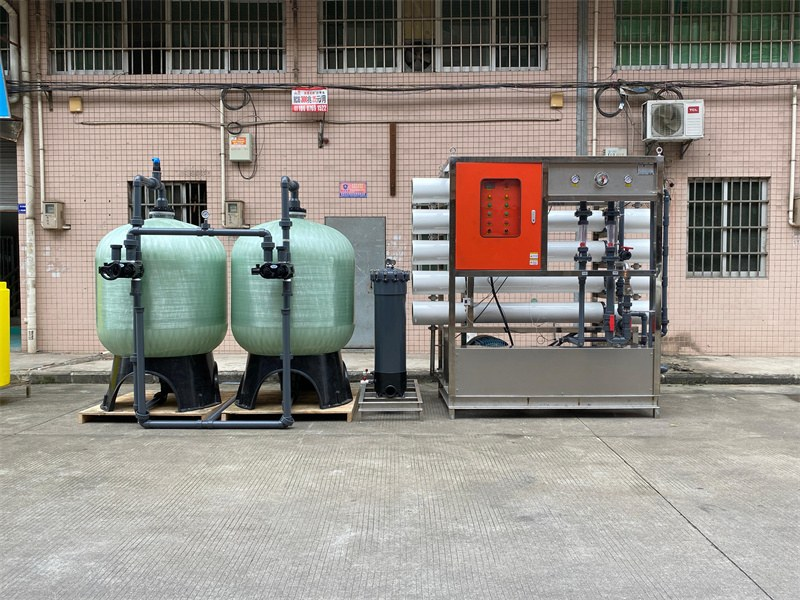
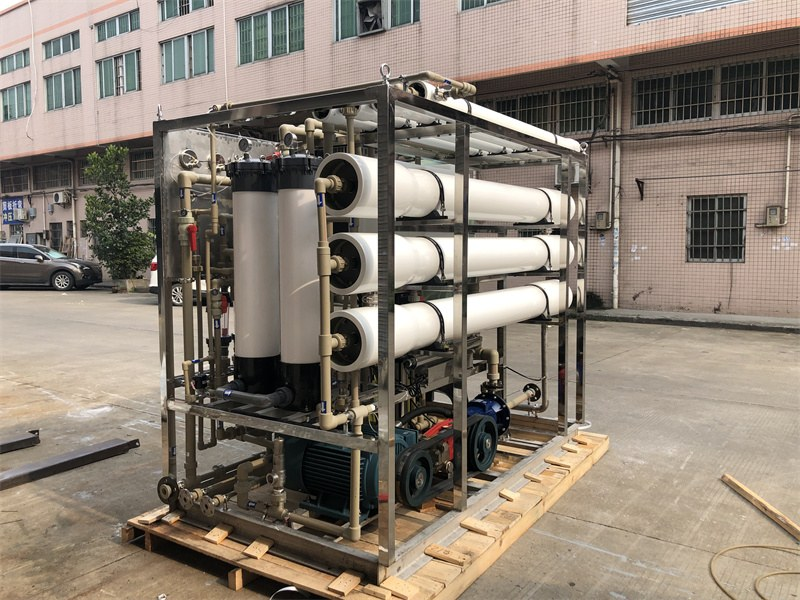
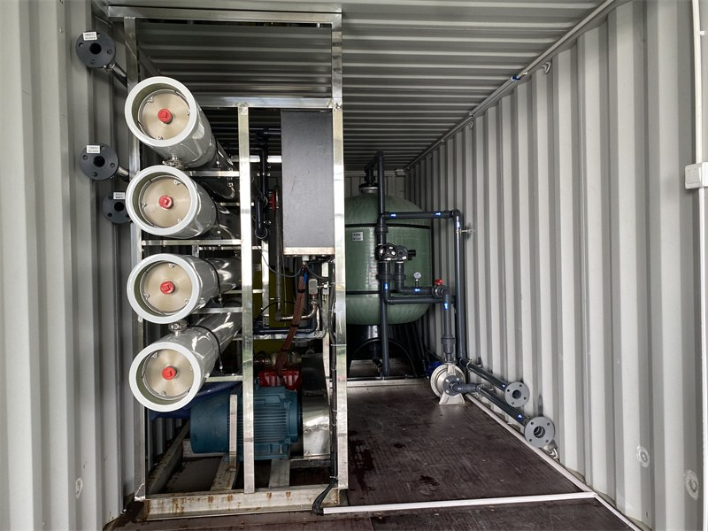
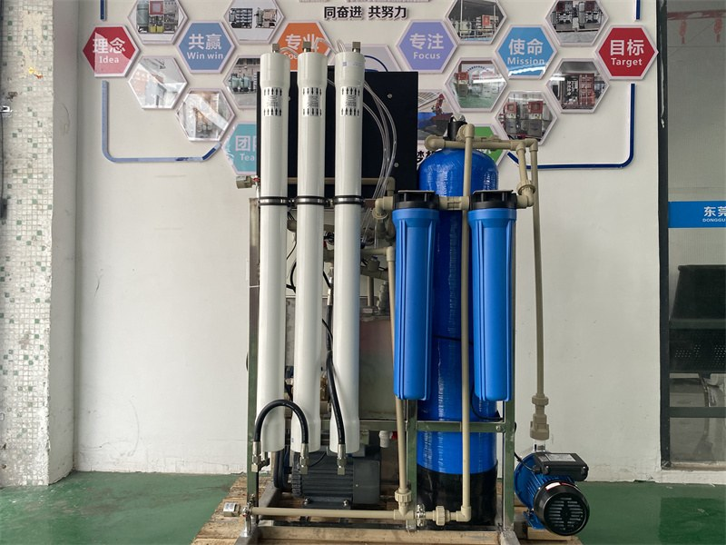
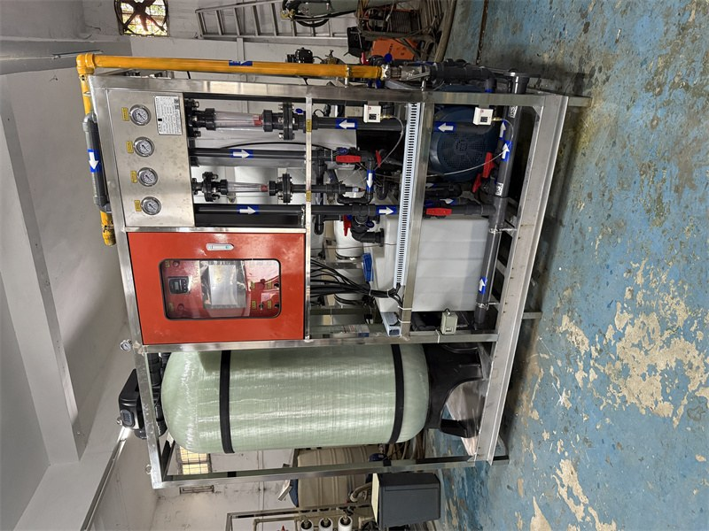
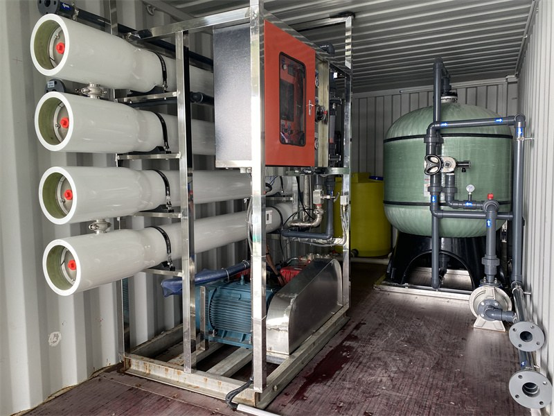
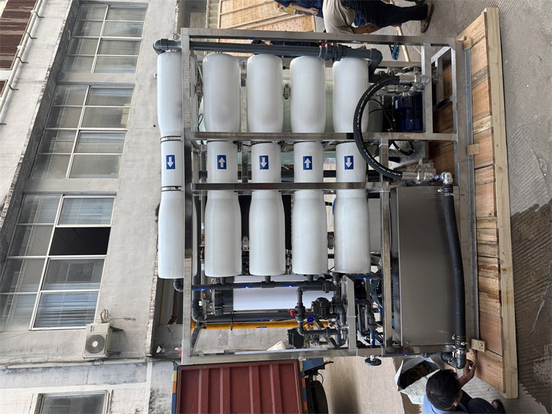
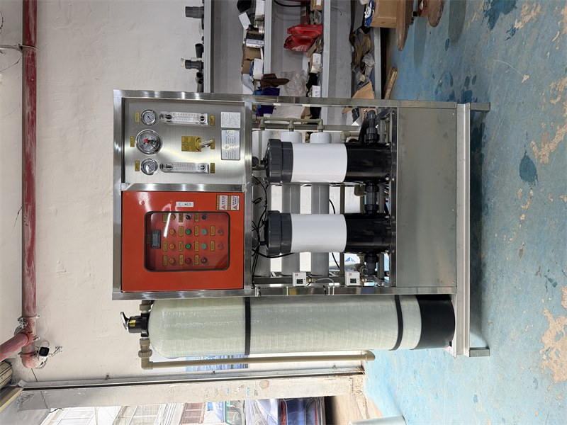
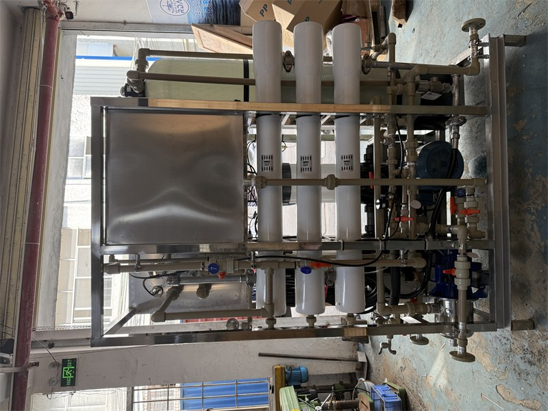
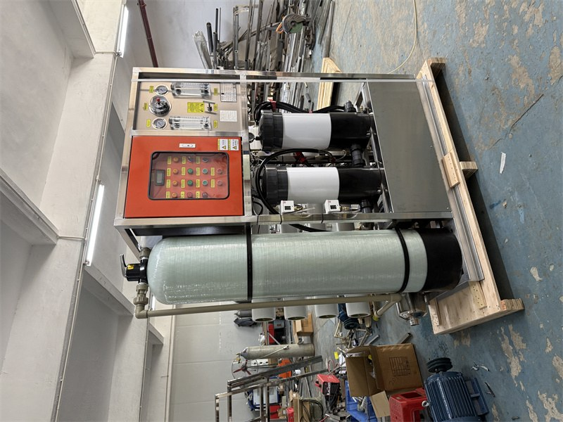
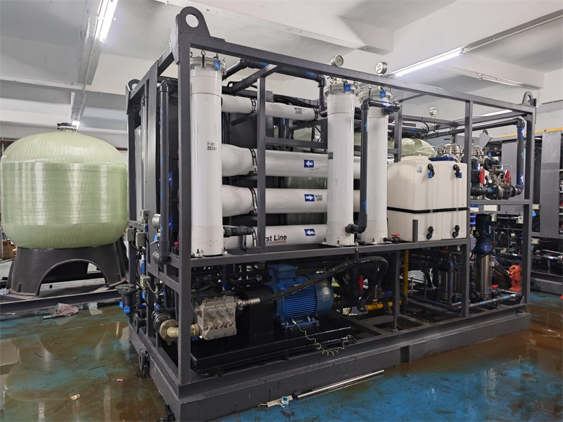
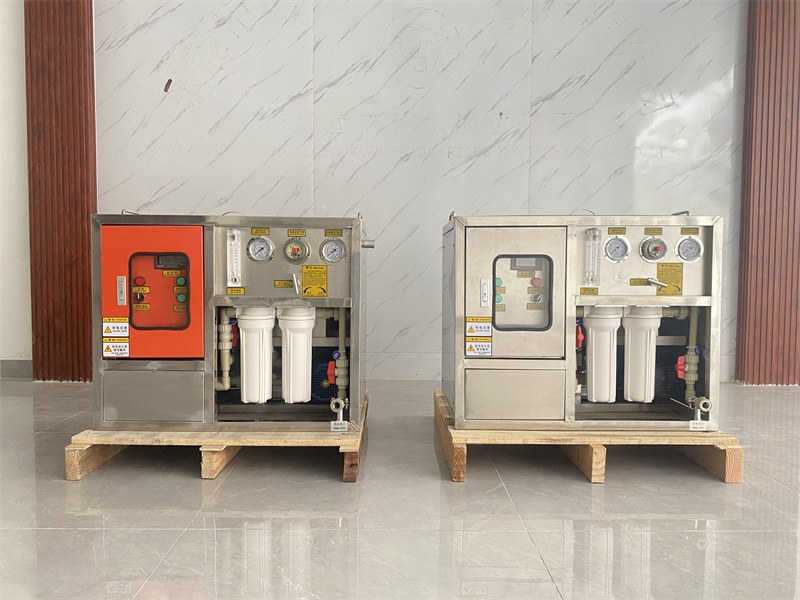
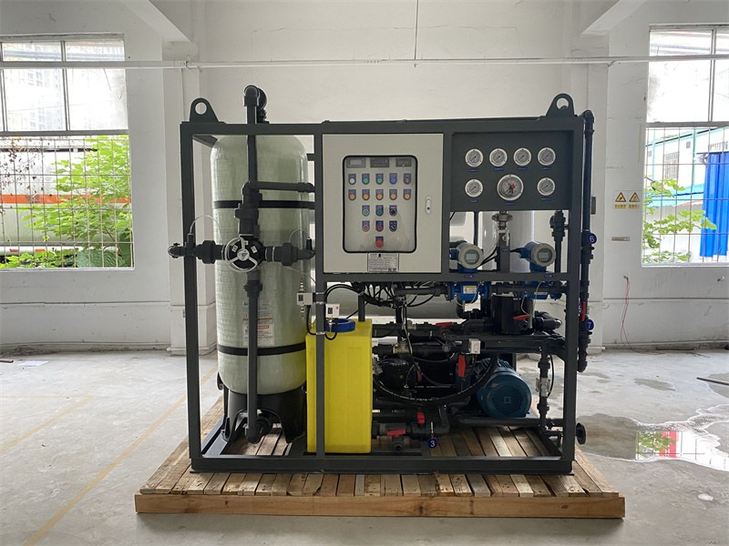
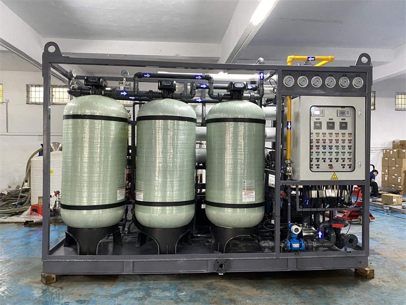
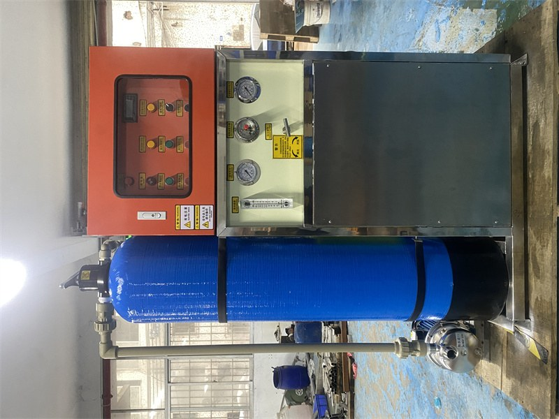
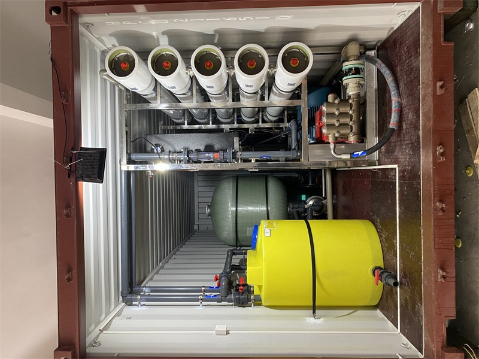
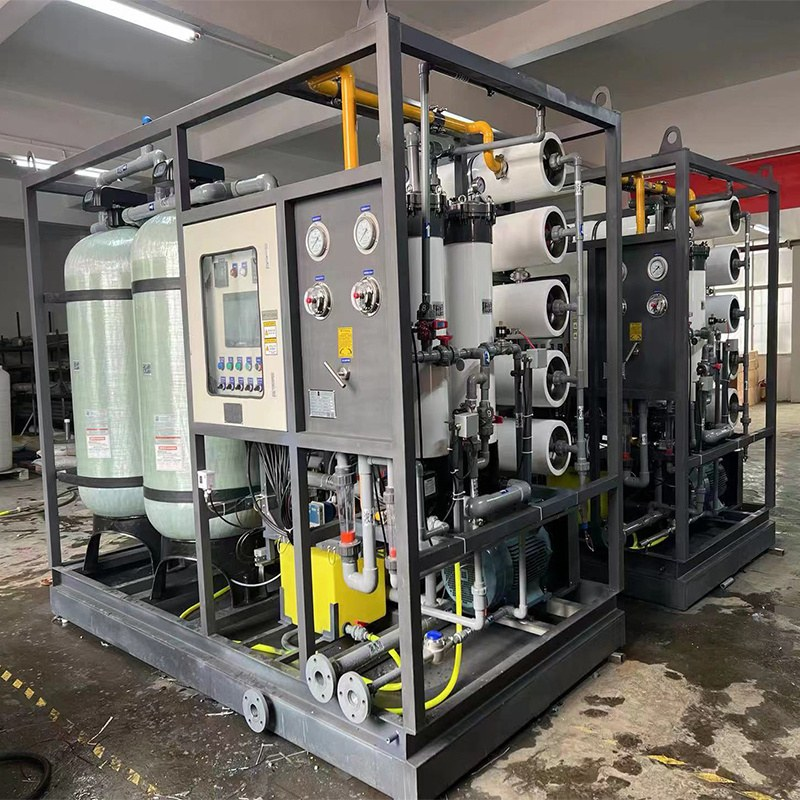
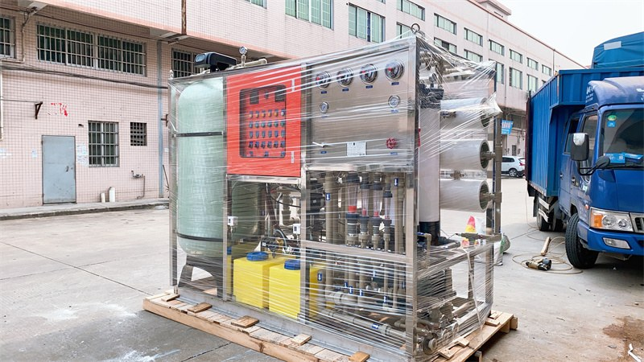
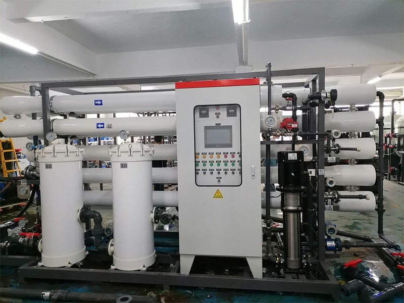
PROJECT ENQUIRY
从您的项目条件开始
留下项目类型、规模和联系方式，便于进一步核对技术需求。
本页为效果预览，表单暂未开放。